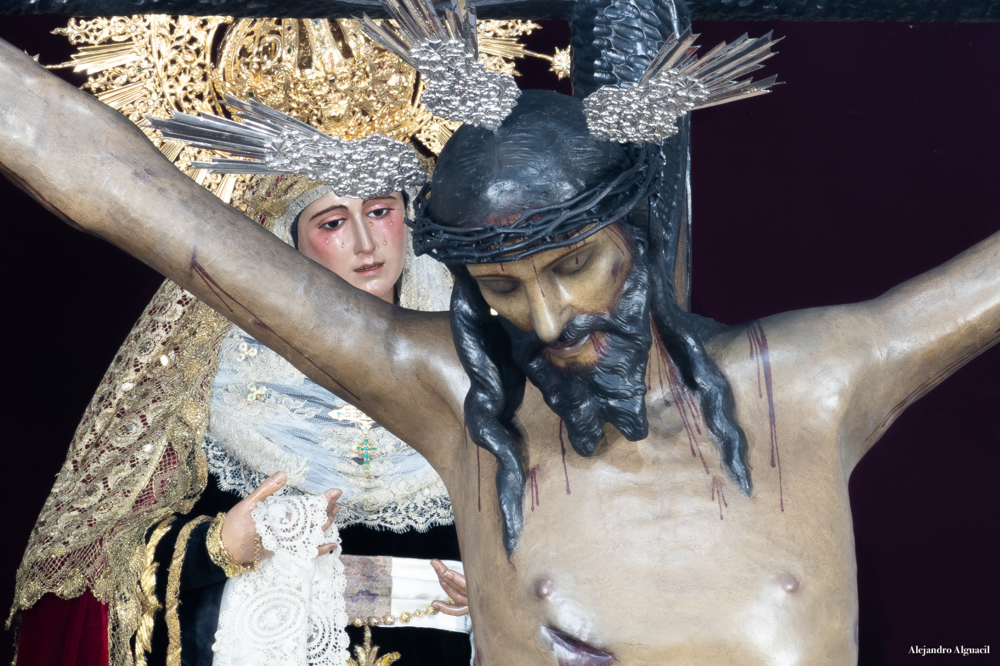

Vera Cruz
Capilla de San Sebastián
Antigua y Real Hermandad Sacramental y Cofradía de Nazarenos del Santo Cristo de la Vera-Cruz, María Santísima en sus Misterios del Mayor Dolor y Asunción a Los Cielos y San Sebastián Mártir

Numero de hermanos
1100
Nazarenos
375
Autores
Santo Cristo de la Vera-Cruz es obra anónima (siglo XVI), restaurado por Pineda Calderón (1950), Abascal (1977 y 1982) y Arquillo (1990). María Santísima del Mayor Dolor es obra de autor desconocido (principios del siglo XX) y restaurada por Pineda Calderón (1950), Juan Abascal Fuentes (1979) y Francisco Arquillo (1998).
Capataces
Antonio Jesús Sutil Rubio en el Paso de Cristo y Ezequiel Sánchez Rivas en el Paso de Palio
Música
No lleva música en el Paso de Cristo y Asociación Musical Utrerana en el Paso de Palio
RECORRIDO
| Hora | Cruz de guía |
|---|---|
| 20:00 | Salida |
| -- | Churruca |
| -- | Plaza de Hidalgo Carret |
| -- | Álvarez Quintero |
| -- | Real Utrera |
| -- | Jesús de Grimarest |
| -- | San Fernando |
| -- | Santa Estefanía |
| -- | Cristo de la Vera-Cruz |
| -- | Portugal |
| -- | Avenida de Andalucía |
| 21:00 | Manuel de Falla |
| 21:30 | Antonia Díaz |
| 22:00 | Plazoleta |
| -- | Santa María Magdalena |
| -- | Plaza de la Constitución |
| 22:30 | Carrera Oficial |
| -- | Santa Ana |
| -- | Real Utrera |
| 23:00 | Goyoneta |
| -- | San Sebastián |
| -- | Mena Martinéz |
| 00:25 | Entrada |